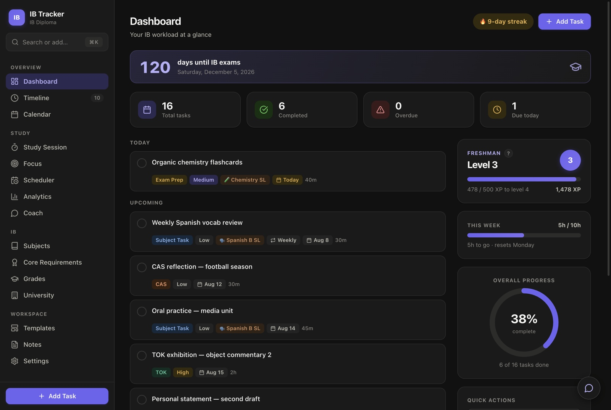
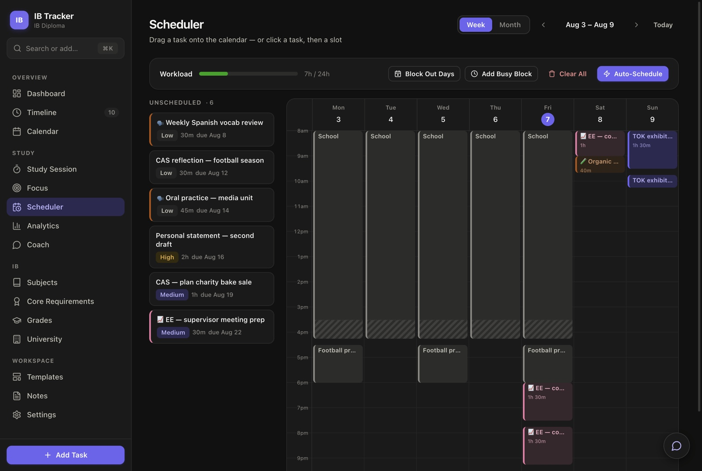
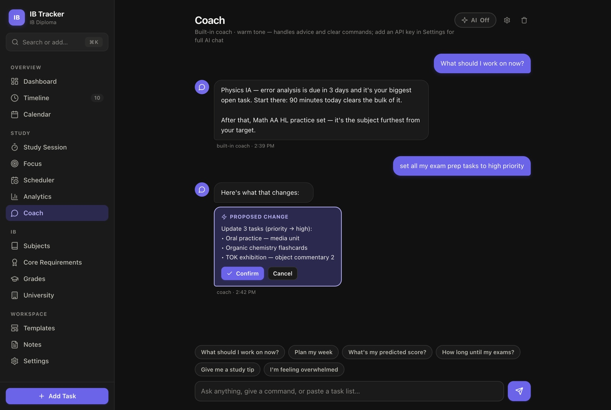
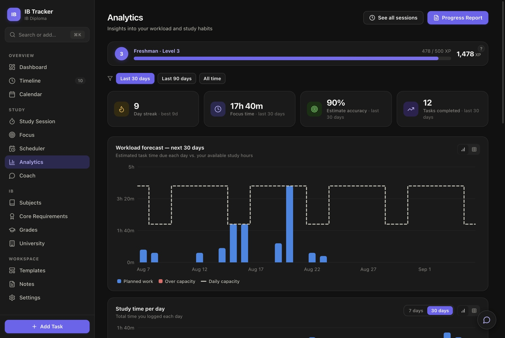

Every IA, the EE, TOK deadlines, CAS, your predicted points and the exam countdown — tracked in one Mac app that works completely offline and keeps your data on your own laptop.
Free to download · Works on any Mac · No account, no sign-up, no internet needed
First launch needs one extra step — how to open it. macOS blocks apps that aren't from the App Store until you allow them, once.

Built for the Diploma
HL and SL, the seven-point scale, core points from TOK and the EE, session dates. You're not bending a generic to-do app into shape.
Categorise by IA, EE, TOK, CAS, exam prep or university work. Set predecessors so revision can't start before the notes exist.
Current and target grades per subject, the TOK/EE core-points matrix, and a diploma-target calculator showing which subject gains you the most.
Applications, deadlines, offer conditions per subject, required HL totals, and your own quick links to Common App or BridgeU.
A session timer with a task queue that survives a refresh, optional Pomodoro cycles, and a distraction shield that counts every time you drift.
Earn XP for finishing tasks on time and logging real study minutes, with a streak multiplier. Never-ending levels and ranks.
A print-ready PDF for any date range — highlights, study activity, grade snapshot and next deadlines. Useful when someone asks how it's going.
Scheduler
Tell it when you're at school and when football is, and Auto-Schedule fits your work into what's genuinely left.

Coach
A study coach that can see your real tasks, deadlines, grades and habits. It works offline out of the box — no API key, no account.

Analytics
Not vanity charts — the ones that change what you do next week.

Your data
There's no server, no account and no sync. Everything you type is stored on your own machine and never sent anywhere. You can use the entire app with the Wi-Fi off.
No telemetry, no analytics, no account to create. The only time it touches the internet is a once-a-day check for a new version, which you can switch off.
Export everything to a single JSON file whenever you like. Import from another tracker via JSON or CSV. Exports never include your licence key or API key.
The app checks for a new version once a day, shows you exactly what changed, and installs nothing until you press Update. Your work is untouched.
Pricing
A key unlocks editing. Buy a month to get through mocks, or buy it once and forget about it — there's no subscription and no card kept on file.
Checkout isn't live yet. The app and its sample data are fully explorable in the meantime.
If someone else is paying for this, here's everything they'd reasonably want to know.
| What you're buying | A licence key for one person, sold as a prepaid block of time. It unlocks editing in the app. |
|---|---|
| Does it auto-renew? | No. Nothing renews, no card is stored, and no subscription is created. When a block runs out you choose whether to buy another. |
| What happens after it runs out | The app becomes read-only. Everything can still be read, searched, reported on and exported in full — no work is ever held hostage. |
| Is an account needed? | No. There is no sign-up, no email verification and no login. The key is entered once in Settings. |
| Where does the data live | Only on the Mac it was typed into. Nothing is uploaded, and there is no server to breach. |
| Requirements | Any Mac — Apple Silicon or Intel — running a recent macOS. Roughly 250 MB of disk space. |
| Updates | Included for the life of the app, not tied to the licence block. |
Yes. Download it and pick “try it with sample data” on the first screen — a realistic set of tasks, grades and study sessions you can click through completely. You can clear it any time in Settings.
Adding and changing things. Reading, searching, filtering, the analytics, progress reports and exporting all keep working. If a key runs out, nothing is deleted and you can still take everything with you.
Completely. There is no server. The only network request the app ever makes is a once-a-day version check, and that can be turned off in Settings.
Yes — it's built to run on both Apple Silicon and older Intel Macs. It does need one extra step the first time you open it, because it isn't distributed through the App Store — see opening it the first time.
You'll see “IB Tracker can't be opened because Apple cannot check it for malicious software.” That message means the app hasn't been through Apple's paid notarisation service — not that anything is wrong with it. Here's how to open it:
You only do this once. After that it opens normally, and updates install without asking again.
On macOS Sequoia and later, Control-clicking the app and choosing Open no longer works — Apple removed that shortcut, so System Settings is the only route.
The built-in coach runs entirely on your machine and sends nothing. If you want full AI conversations you can add your own OpenRouter API key, and only then is your study data sent to OpenRouter when you chat. The key is stored locally and is never included in backups.
Export a backup from Settings, install the app on the new Mac, and import it. Your licence key is not stored in the backup file, so keep the email it came in — enter it again in Settings.
Not yet — this is a Mac app today. The core also runs as a plain web page in any browser, but the Mac app is the supported way to use it.
See the whole thing working before you decide anything.
Open the .dmg and drag IB Tracker to Applications, then follow
the first-launch steps once.